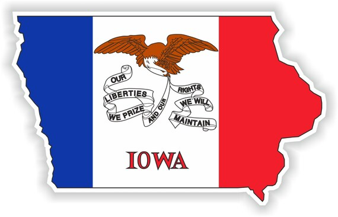

"I believe the mark of an excellent Web Developer starts with the hunger to learn; followed by the curiosity to investigate; tied to a willingness to make mistakes, while listening to and collaborating with others; finished with -- well, coding is never finished. Web Development is never-ending. So, the best Web Developer stays in the 'loop' of excellence!" ~ Coding Nannah
Nannah & DaNannah
Someone clever on Etsy created this sticker!
I am the oldest of five children born to Dan and Sandy Bever. Each of us were born at different hospitals in Des Moines, Polk, Iowa. We lived there until the Summer before my third grade year when we moved to Waukee, Dallas, Iowa. My Dad's family is generations strong in Dallas County.
My family has called me "Nannah" or even "Nannah Monster" since as long as I can remember. It was converted into "DaNannah" when my brother Bryan lived for two years in the Caribbean (The Bahamas, Jamaica, Trinidad & Tobago). He had picked up the accent when he called and asked me, "How is da Nannah?" It was funny, and that version of my nickname stuck.
My Grandpa Bever was a prominent individual in my life. His real name was Lee, but everyone called him, "Bud." He lived an hour or so away, and I loved his visits! He often brought me something I would appreciate, from a clarinet, drawing and coloring pencils, favorite snacks, a huge joke book, and more. Grandpa never forgot to provide sweet pickles for me on Thanksgiving. He played a number of instruments and was the fiddle player in a bluegrass band. He was a talented woodworker who also made and fixed violins. Grandpa served in WWII in the Philippines but always changed the subject when we wanted to know more about it.
While I was serving a mission for my Church in Guatemala in 1993, Grandpa died unexpectedly just a handful of months after Dad. My family said he took Dad's death hard and was heard to say that a father shouldn't outlive his son. Some days, I still really miss them both, but the pain isn't as long and deep. I believe Spirits live on, and I will see my Grandpa and my Dad again in a resurrected state. I look forward to their hugs!
Bever to Barber
Embrace change! Refresh the page and see what happens to this pic.
I met Freshman, Tom Barber, during my Senior year at Utah State University in Logan, Utah. I graduated with my BA in Anthropology and Political Science and moved to Orem and Salt Lake City for a couple of years. I couldn't seem to get enough of Cache Valley -- great hiking and year-long adventtures. Needless to say, upon my return, I remet and married Tom. We have two boys together. Our story could have been idyllic, except for some addictions my husband couldn't shake. I thought back to an insensitive remark an older lady made to me at our wedding reception:
Change the name, but not the letter. Change for worse and not for better. ~ Old Adage
Since I was changing my last name from 'Bever' to 'Barber,' I'm sure she thought she was being clever. The truth was that after 16 years of an addiction-laden marriage, I was not handling the situation well at all. In fact, it was literally killing me. Our divorce was final in 2018. I kept the last name 'Barber' for my boys. It was only after the final paperwork was filed that I found out I could have had a clause that allowed me to change my name back to my maiden name after my sons graduated from high school, or any time I chose.
Coding Nannah
'Radical Acceptance' & Moving Forward!
Looking on the bright side of things, post-divorce, the basket-case I was allowed me to qualify for Vocational Rehabilitation. Though I lost a lot, I also won the townhome, so I was able to sell it, move closer to my sons' school, and pay two years of rent from the get-go. Things really weren't as bad as they seemed.
After as much therapy as I experienced, I decided I'd like to pursue a job as a Holistic Life and Wellness Coach. It seemed a better option to get certified in different modalities ASAP than to try to go back to USU or another school for another 2-4 years of studies. So, I did that and tried it for about two years. It turns out, I'm very good at Holistic Life Coaching, and I love it...as a hobby! In two years of an actual business, I only made $65 USD.
So, why coding?
It kept popping up everywhere!
I used to think that only brilliant mathemeticians with graduate degrees in computer science could pursue coding.
Not so!
For about a month (May-June 2022), I starting delving into coding: what it is; who does it; is it a good job?; coding bootcamps -- the works. I realized I enjoyed the short trials I experienced, and I was excited that I could work from home. My take-home pay would definitely be more than $65! I knuckled down and created a spreadsheet to track the bootcamps I was interested in. That helped me decide which one to join. Ultimately, I chose Coding Temple.
With all the investigation I was doing and the questions going back and forth, my personal email was getting overloaded. I decided it was time to really pursue coding in earnest and to separate the emails from the rest of my life. My new email and I became "Coding Nannah."
I love to travel!
If you could travel to (or live on!) another continent, where would you go?

Wisdom from Grandpa Bever
Leave in time to get home before it closes.
Don't pick your nose while jumping on a trampoline.
If you're going to 'go ahead and back up,' you aren't going anywhere anytime soon.